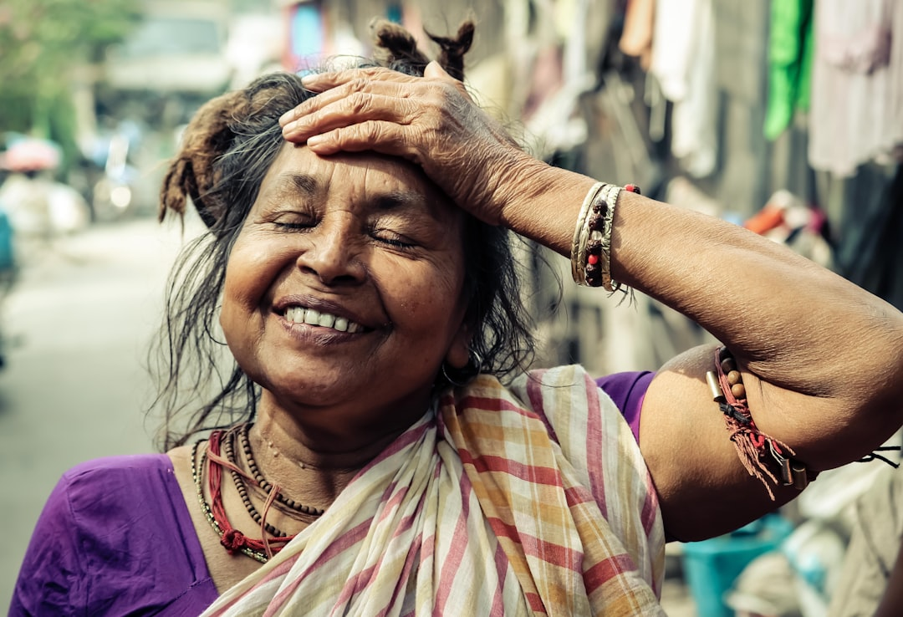

Jalebi Rocks Review – A Beautiful Story of Women, Family, and Finding Your Own Voice
There are some films that entertain you for two hours and then fade from memory the moment you step out of the theatre. And then there are films like Jalebi Rocks — films that stay with you long after the credits roll, quietly nudging you to reflect on your own life, your relationships, and the silent sacrifices that happen every single day within the four walls of a home.

Released on 27 June 2025, Jalebi Rocks is a Gujarati film that arrived without the noise of a massive marketing campaign, but it carries a message so powerful and so deeply human that it deserves to be seen by every family across India. I walked into the theatre expecting a light-hearted family entertainer — what I got instead was an emotionally rich, thought-provoking cinematic experience that left me genuinely moved.
This is not just a movie review. This is my personal reflection on a film that made me think differently about the women in my life — the ones who quietly set aside their dreams, their ambitions, and their identities to hold families together. Jalebi Rocks is their story. And it is told with a grace and authenticity that is rarely seen in regional cinema.
"Some voices are never silenced — they are simply waiting for the right moment to be heard."

Story Overview – Relatable, Rooted, and Real (Spoiler-Free)
At its core, Jalebi Rocks is the story of a woman — a wife, a mother, a daughter-in-law — who has spent years pouring herself into her family while quietly burying her own dreams and talents. The film does not present her as a victim, nor does it vilify the family members around her. Instead, it paints a nuanced portrait of how life simply happens — how responsibilities accumulate, how time passes, and how one day you look in the mirror and wonder where the person you once were has gone.
The story unfolds within the setting of a typical Gujarati middle-class household — one that will feel instantly familiar to anyone who has grown up in an Indian joint family. The dynamics are real: the expectations, the unspoken rules, the love that exists alongside the limitations. There is no larger-than-life villain here, no dramatic conflict born from hatred. The tension in the film emerges from something far more relatable — the quiet friction between what a woman wants and what the world expects of her.
What makes the story especially powerful is that it does not take sides. The men in the film are not portrayed as oppressors. They are portrayed as human beings — shaped by their own upbringing, their own blind spots, and their own genuine love for their family. This balanced storytelling is what elevates Jalebi Rocks from a simple women's empowerment narrative to something far more universal and emotionally honest.
Without giving away key plot points, I can tell you this: the film's journey is one of rediscovery. It is about a woman finding her voice again — not through rebellion, but through courage, support, and the quiet but transformative power of believing in yourself.
What Makes Jalebi Rocks Special?
In an era where films often rely on exaggerated drama, loud confrontations, and convenient resolutions, Jalebi Rocks chooses a different path. It speaks softly. And that is precisely what makes it so powerful.
Realistic Characters That Feel Like People You Know
Every character in this film feels like someone you have met — or perhaps someone you are. The protagonist does not have a dramatic backstory. She is simply a woman who has lived her life doing what was expected of her, and who now stands at a crossroads. Her journey resonates because it is not extraordinary. It is ordinary — and that is the point.
The supporting characters are equally well-drawn. The husband is not a caricature of patriarchy. He is a man who loves his wife but has never truly seen her as an individual with her own aspirations. The children bring warmth and comic relief without feeling forced. The extended family members represent the various voices of society — some encouraging, some skeptical, some simply unaware.
Emotion Over Melodrama
One of the things I appreciated most about Jalebi Rocks is its restraint. The film trusts its audience. It does not underline every emotional moment with swelling background music or close-up reaction shots. The emotions breathe naturally, and because of that, they land with far greater impact. There were moments in the film where the theatre went completely silent — not because something dramatic had happened, but because something true had been said.
The Most Powerful Aspect: The Women's Perspective
If I had to choose one thing that sets Jalebi Rocks apart from other Gujarati films I have seen, it would be the way it portrays women — not as martyrs, not as superheroes, but as complete human beings with dreams, fears, talents, and the fundamental desire to be seen.

The Silent Sacrifice That Goes Unnoticed
The film shines a gentle but unflinching light on a reality that millions of Indian women live every day: the silent sacrifice of identity. From the moment a woman gets married, society begins to redefine her — first as a wife, then as a daughter-in-law, then as a mother. These are beautiful roles. But somewhere in the process of fulfilling them, the woman herself — her interests, her ambitions, her individual identity — quietly disappears.
Jalebi Rocks does not shout this truth. It shows it. In small, everyday moments — a forgotten hobby, a dream deferred, a talent never explored — the film builds a portrait of what it means to lose yourself while loving others.
Talent Has No Expiry Date
One of the most inspiring messages of the film is that it is never too late to rediscover yourself. The protagonist's journey of self-discovery is not about reclaiming a lost youth — it is about recognizing that who you are has never truly gone away. Your talents, your voice, your dreams — they wait patiently for you to return to them.
This message feels especially important in a society that often tells women that their window of opportunity is narrow, that certain things are only for the young, that once you have a family, personal ambitions become selfish. Jalebi Rocks challenges all of these assumptions with warmth and dignity.
Confidence as a Journey, Not a Destination
What I found particularly moving was the way the film portrays the protagonist's growing confidence — not as a sudden transformation, but as a gradual, sometimes uncertain journey. There are moments of self-doubt, moments of stepping back, moments of wondering whether she is too old or too late. These moments feel real because they are real. And watching her push through them, supported by love and her own inner strength, is genuinely inspiring.
Understanding Different Perspectives – The Film's Most Underrated Strength
What I did not expect from Jalebi Rocks was its commitment to fairness. This is not a film that demonizes men or glorifies women. It is a film that asks its audience to look at every situation from multiple angles — and that, in my opinion, is its most underrated strength.
Empathy as a Two-Way Street
The men in the film are given space to be understood, not just judged. We see the pressures they carry — the financial responsibilities, the social expectations, the conditioning they have grown up with. We understand why they behave the way they do, even when their behaviour inadvertently limits the women around them. This does not excuse anything. But it creates a far more honest and productive conversation than simple blame ever could.
The film essentially argues that most family conflicts are not born from malice — they are born from a failure to truly see each other. When family members begin to communicate, to listen, to understand each other's unspoken experiences, everything changes. Walls come down. Relationships deepen. And individuals — both men and women — begin to grow.
Communication as the Foundation of Love
There is a particular scene in the film — I will not describe it in detail to avoid spoilers — where a conversation between two family members shifts the emotional centre of the entire story. It is a moment of simple, honest communication, and it is so beautifully written and performed that it took my breath away. It reminded me that the most revolutionary act within a family is sometimes just saying what you truly feel — and having someone truly listen.
Family, Support, and Second Chances
At its heart, Jalebi Rocks is a love letter to family — not the idealized, conflict-free family of fairy tales, but the real, complicated, imperfect, beautiful family that most of us actually have.

The Transformative Power of Encouragement
One of the film's most moving threads is the role that family support plays in transforming the protagonist's confidence and trajectory. When the people who love you believe in you — when they say, out loud, that your dreams matter, that your talent is real, that it is not too late — something shifts inside you. The film captures this shift with extraordinary sensitivity.
It made me think about all the women I know who might have achieved remarkable things if someone had simply told them, early enough and often enough: "You can do this. Go ahead."
Second Chances Are Not Just for the Young
The film's treatment of second chances is one of its most powerful contributions to the conversation about women's empowerment. It argues — quietly but firmly — that every person, regardless of age, deserves the opportunity to begin again. To try something new. To pursue something they love. This is not naïve optimism. It is a fundamental truth about human potential that our society too often forgets.
Acting, Direction, and Storytelling – A Craft Worth Celebrating
From a purely cinematic standpoint, Jalebi Rocks is a well-crafted film. The performances are uniformly strong, with the lead actress delivering a performance that is subtle, layered, and deeply affecting. She does not rely on big dramatic moments to communicate her character's inner world — instead, she conveys everything through small gestures, glances, and the way her posture changes as her confidence grows across the film.
The direction is assured and unhurried. The filmmaker clearly trusts the material and trusts the audience, allowing scenes to develop naturally without rushing toward resolution. The screenplay is sharp without being showy — the dialogue feels like real conversation, and the emotional beats are earned rather than manufactured.
The music deserves a special mention. The songs are woven into the narrative rather than interrupting it, and they carry genuine emotional weight. The cinematography captures the warmth and texture of Gujarati domestic life beautifully — you can almost smell the food, feel the fabric of the saris, hear the sounds of a busy household morning.
Jalebi Rocks – Rating Table
| Category | Rating (Out of 5) | Comments |
|---|---|---|
| Story | ⭐⭐⭐⭐⭐ 5/5 | Relatable, original, and emotionally resonant |
| Acting | ⭐⭐⭐⭐½ 4.5/5 | Natural, nuanced performances across the board |
| Direction | ⭐⭐⭐⭐½ 4.5/5 | Confident, restrained, and deeply human |
| Emotional Impact | ⭐⭐⭐⭐⭐ 5/5 | Genuinely moving without being manipulative |
| Social Message | ⭐⭐⭐⭐⭐ 5/5 | Powerful, balanced, and urgently relevant |
My Personal Takeaway from Jalebi Rocks
I have watched hundreds of films over the years, and I can count on one hand the number that made me sit quietly in my seat long after the lights came back on. Jalebi Rocks is one of them.
Walking out of the theatre, I found myself thinking about the women in my own life — my mother, my aunts, my friends — and all the things they might have done if the world had been slightly more generous with its encouragement. How many paintings were never painted? How many songs were never sung? How many ideas were never pursued because someone, somewhere, said it was not the right time, the right age, the right role?
The film made me realize something important: the barriers that limit women are not always loud or obvious. Sometimes they are invisible — built from habit, expectation, and the quiet assumption that certain dreams belong to certain people. And the most powerful thing we can do, as family members, as friends, as a society, is to challenge those assumptions. To say, clearly and often: your dreams matter. Your voice matters. You matter.
The strongest message I took away from Jalebi Rocks is this: never stop believing in yourself, regardless of your age, your gender, or your circumstances. It is never too late to find your voice. It is never too late to begin.

The Moral of Jalebi Rocks – Six Lessons That Stay With You
- Every individual deserves the opportunity to grow. Growth is not a privilege reserved for the young or the fortunate. It is a fundamental human right.
- Dreams do not have an age limit. Whether you are twenty or fifty, your aspirations are valid and worth pursuing.
- Women should be encouraged to pursue their ambitions. Family and society must actively create space for women's dreams, not just tolerate them.
- Family support is one of life's greatest strengths. Encouragement from loved ones can transform a person's confidence and open doors that seemed permanently closed.
- Understanding different viewpoints creates stronger relationships. Empathy — truly trying to see the world through another person's eyes — is the foundation of genuine connection.
- Self-belief is the foundation of success. Before anyone else can believe in you, you must find the courage to believe in yourself.
Final Verdict – A Must-Watch Gujarati Film of 2025
Jalebi Rocks is, without question, one of the most meaningful Gujarati films I have seen in recent years. It is the kind of film that reminds you why cinema matters — not just as entertainment, but as a mirror that reflects our lives back at us and, in doing so, helps us see ourselves more clearly.
I would recommend this film wholeheartedly to:
- Families — Watch it together and let it open conversations that perhaps have never been had.
- Young adults — See it as a reminder that the choices you make now will shape the person you become.
- Parents — Reflect on how your encouragement — or its absence — shapes your children's and partner's sense of possibility.
- Anyone seeking inspiration — If you have ever felt stuck, overlooked, or unseen, this film is for you.
- Anyone who loves good cinema — Because Jalebi Rocks is simply a beautifully made film.
This is not a film about grand gestures or dramatic victories. It is a film about the quiet, courageous act of deciding that you are worth more than the limitations the world has placed upon you. And that, in my opinion, is the most powerful story of all.
Frequently Asked Questions (FAQ)
Q1: When was Jalebi Rocks released?
Jalebi Rocks was released on 27 June 2025. It is a Gujarati-language film that has been receiving strong word-of-mouth appreciation for its emotional storytelling and social message.
Q2: Is Jalebi Rocks suitable for family viewing?
Absolutely. Jalebi Rocks is a family drama that can be enjoyed by viewers of all ages. Its themes of love, support, and personal growth make it especially meaningful when watched with family members across generations.
Q3: What is the central message of Jalebi Rocks?
The central message of the film is that every individual — regardless of age, gender, or life stage — deserves the opportunity to grow, pursue their dreams, and be seen for who they truly are. It also emphasizes the transformative power of family support and empathy.
Q4: Is Jalebi Rocks a women's empowerment film?
While Jalebi Rocks strongly focuses on women's identity, aspirations, and self-discovery, it is more accurately described as a human empowerment story. It presents both male and female perspectives with fairness and compassion, making its message relevant to everyone.
Q5: Does Jalebi Rocks have a happy ending?
Without revealing spoilers, the film's conclusion is emotionally satisfying and hopeful. It resolves its story in a way that feels earned and true to the characters, without resorting to unrealistic or overly convenient solutions.
Q6: Why is the film called Jalebi Rocks?
The title is intriguing and carries symbolic meaning within the context of the story. Just as a jalebi — sweet, spiraling, and deceptively complex — surprises you with its depth, the film itself surprises you with how much it has to say beneath its warm, inviting surface.
Q7: Is Jalebi Rocks one of the best Gujarati movies of 2025?
Based on its storytelling quality, emotional impact, and social relevance, Jalebi Rocks is certainly among the standout Gujarati films of 2025. It represents the kind of meaningful, audience-respecting cinema that the regional film industry should be celebrated for producing.
Conclusion – Give Every Voice the Chance to Be Heard
We live in a world that is still learning — slowly, imperfectly, but genuinely — to make space for every voice. Jalebi Rocks is a film that contributes to that learning. It does so not with anger or accusation, but with love, warmth, and an unwavering belief in the potential that lives within every human being.
The film's greatest gift is the reminder that it is never too late. Never too late to discover a talent you did not know you had. Never too late to pursue a dream you thought you had left behind. Never too late for a family to truly see one of its own — and to say, with all the love they have: "We see you. We believe in you. Go ahead."
If you have not yet watched Jalebi Rocks, I urge you to do so. Take your family. Take your parents. Take anyone in your life who has ever felt overlooked, underestimated, or unseen. Because this film is for them. It is for all of us.
And perhaps, when you walk out of the theatre, you will do what I did — look at the people you love and think about the dreams they may still be carrying, quietly, somewhere inside. And perhaps you will find the courage to ask them: "What is it that you have always wanted to do?"
That question, and the love behind it, can change everything.
"Jalebi Rocks is not just a film. It is an invitation — to see more, feel more, and believe more. In the people you love. And in yourself."